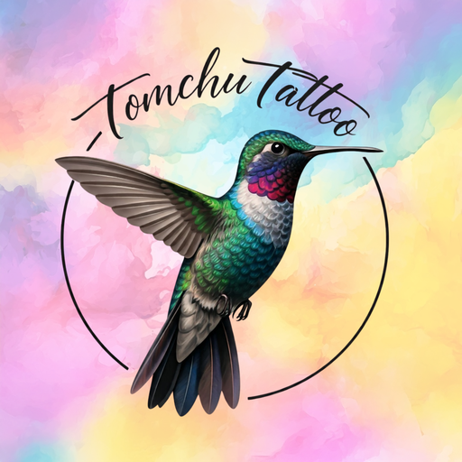

האפליקציה של Tomchu Tattoo
פנייה לתום, הצהרת בריאות, מדריך החלמה והעבודות – הכל באייקון אחד על מסך הבית.
האפליקציה כבר מותקנת אצלך
פתיחת האפליקציהאיך מוסיפים למסך הבית?
- 1פותחים את הדף ב־Safariאם הקישור נפתח מתוך וואטסאפ – לוחצים על ⋯ ובוחרים "פתח ב־Safari".
- 2לוחצים על כפתור השיתוףהריבוע עם החץ – בתחתית המסך או ליד שורת הכתובת.
- 3בוחרים "הוספה למסך הבית"גוללים קצת למטה ברשימה , ואז לוחצים "הוסף" למעלה.
- 4זהו!האייקון של היונק מופיע במסך הבית, והאפליקציה נפתחת במסך מלא – בדיוק כמו אפליקציה רגילה.
- 1פותחים את הדף ב־Chromeאם הקישור נפתח מתוך וואטסאפ – לוחצים על ⋮ ובוחרים "פתח ב־Chrome".
- 2לוחצים על ⋮ למעלההתפריט בפינה של שורת הכתובת.
- 3בוחרים "התקנת אפליקציה"או "הוספה למסך הבית", ומאשרים.
חינם, בלי חנות אפליקציות ובלי הרשמה.